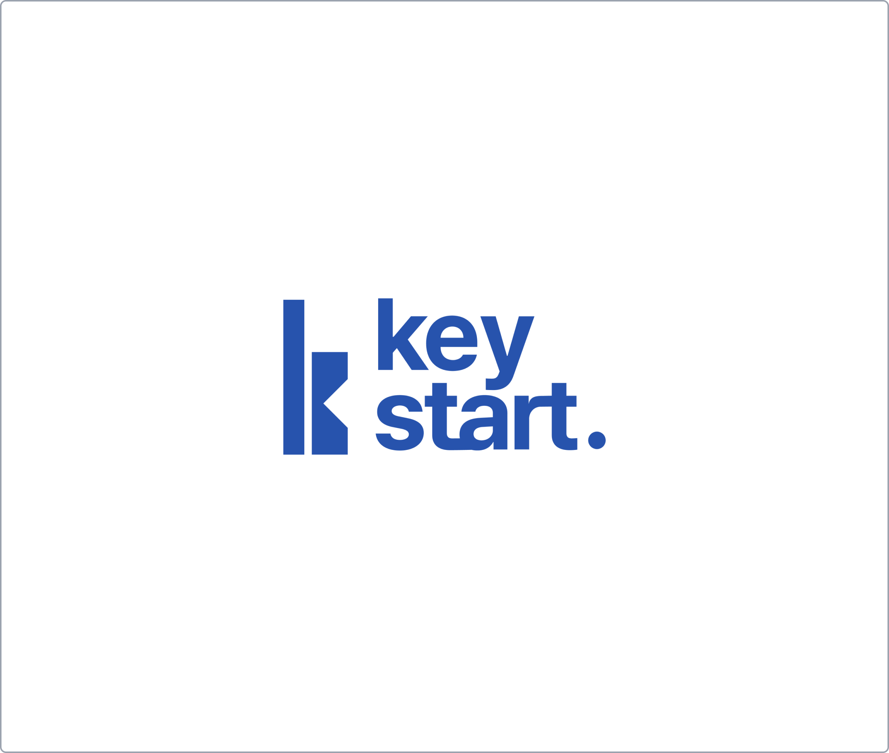
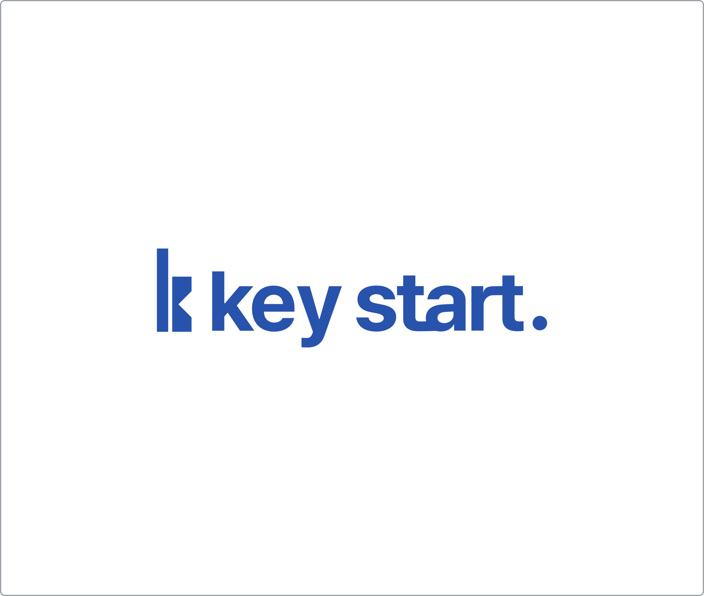

창업의 파트너, 키스타트
키스타트는 창업 과정에서 겪는 어려움을 해소하고자 만들어진 회사입니다.

제가 자영업을 시작한 것은 2017년으로, 벌써 8년이라는 시간이 흘렀습니다.
창업 초기에는 많은 시간을 허비하고 금전적으로도 큰 어려움을 겪었습니다.
또한, 예상치 못한 코로나바이러스와 같은 천재지변으로 사업이 한번 무너진 경험도 있습니다.
그럼에도 불구하고, 다시 창업을 결심하여 오늘에 이르렀습니다.

키스타트는 다음과 같은 방식으로 예비 창업자와 기존 창업자를 지원합니다.
예비 창업자를 위해, 저희가 개발한 프로그램과 소통할 수 있는 오픈 채팅방을 마련하여 창업과 관련된 궁금증
(지원 사업, 세무, 노무, 로컬 정보, 자금 조달 등)을 해결해 드립니다. 매달 다양한 주제로 강의를 진행합니다.
기존 창업자를 위해서는 필요한 정보만을 선택적으로 이용할 수 있는 경로를 제공합니다.
또한, 고정비와 계획비를 절감할 수 있도록 도와주는 다양한 회사와의 협력 체계를 갖추고 있습니다.
Logo
키스타트의 로고는 도전적이면서도 신뢰도 높은 브랜드 가치를 녹여내기 위해
'문을 여는 열쇠'
의 의미를 담은 심플하면서 직관적인 형태로 표현 하였습니다.


Color
#2753AD
#FFFFFF
#000000